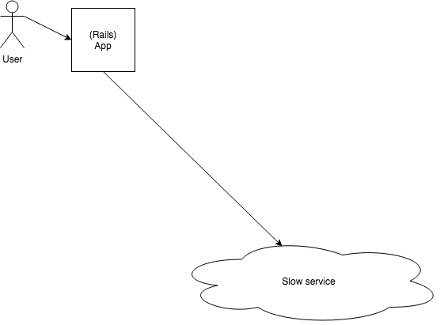
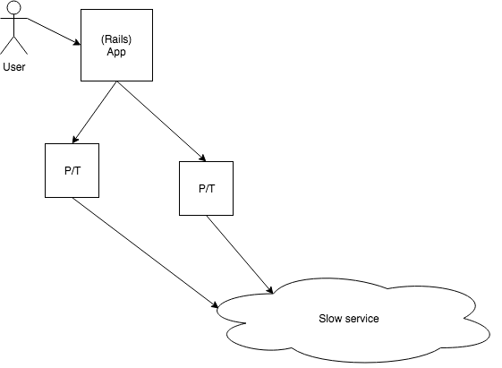
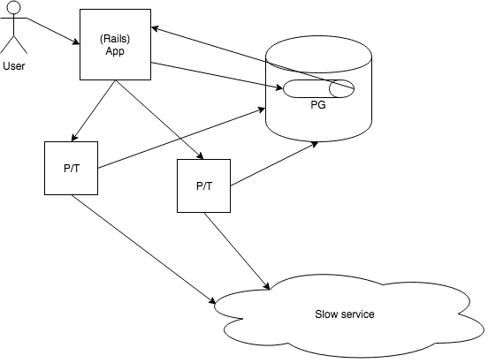
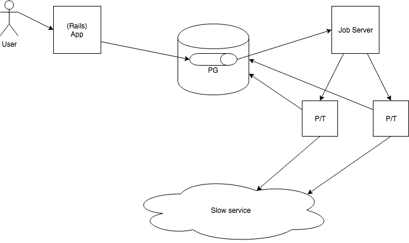
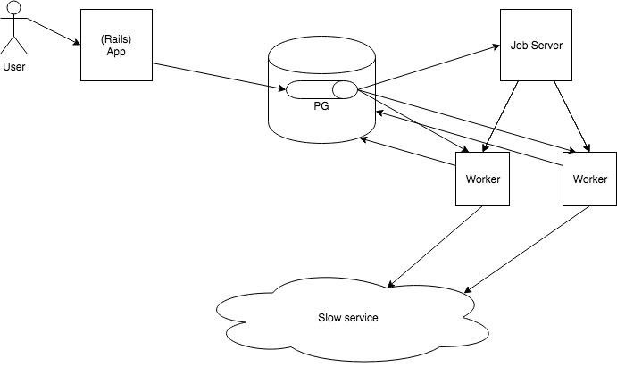
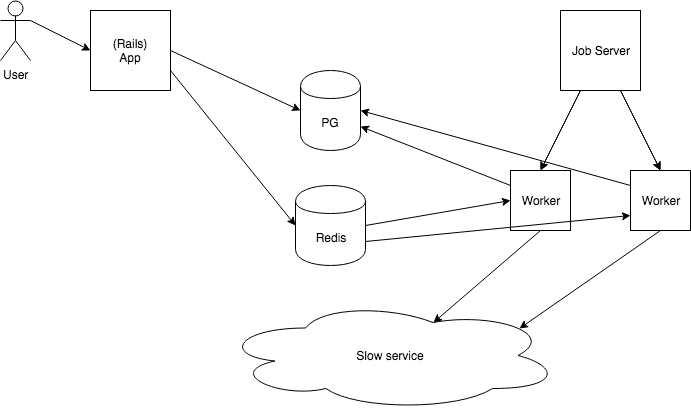

Background Jobs
Pourquoi et Quand?
Plusieurs choses peuvent faire apparaitre ce besoin
- Des requêtes trop longues
- Des tâches periodiques
- Les deux en même temps :D
Comment ?
Reflechissons au problème
Version 1
Ajoutons des threads/process
PB: Et si jamais y a une exception ?
Version 2
Resilience aux erreurs => DB + Retry

PB: Et si jamais on lance 400 jobs d'un coup ?
Version 3
Pas trop de Jobs => Queue
PB: Et si on a besoin de scale les jobs ?
Version 4
Scale et trop de responsabilités => Job serveur
PB: Démarrer un nouveau process c'est couteux…
Version 5
Démarrage couteux => Pool de worker
PB: Des dizaines de Worker qui poll la DB ça la stress…
Version 6
Stress de la DB de prod => Redis <3
PB: On vient de s'en créer plein \o/
Lettre au père Noël
- Monitorer
- Concurrence
- Admin Interface
Log wait, Des logs corrects, Config, …
Le faites pas vous même !
Quelles sont nos options ?
- DelayedJob => PB: utilise PG
- Resque => Threads
- Sidekiq
Exemple
class HardWorker
include Sidekiq::Worker
def perform(name, count)
# do something
end
end
# Ailleur
HardWorker.perform_async("test", 3)
Pourquoi ActiveJob?
- Une interface commune
- S'interfacer facilement avec le reste de Rails
- Passer des objets ActiveRecord
Exemple
class HardJob < ApplicationJob
queue_as :default
def perform(user)
# do something
end
end
# Ailleur
HardJob.perform_later(User.first)
What could go wrong?
So many things…